Theory• A recommender system, or a recommendation system (sometimes replacing 'system' with a synonym such as a platform or an engine), is a subclass of information filtering system that seeks to predict the "rating" or "preference" a user would give to an item.• Problem Formulation– In RecSys our goal is to build a model that predicts items that a user may have an interest in. There are many intuitive approaches to this:* Based on popularity* Based on the user's previous interaction* Based on interactions of similar users* A mixture of above– Note: In most systems, we typically have a form of a score that we evaluate the item’s relevancy and some sort of feedback that we get from the users. • One frequent idea on systems with a huge amount of items and users is to split the recommendation pipeline into two steps: candidate generation and (scoring and) ranking. This helps with the following:– To reduce the complexity of the systems by avoiding running the model into the entire dataset.– To produce better and more relevant recommendations.
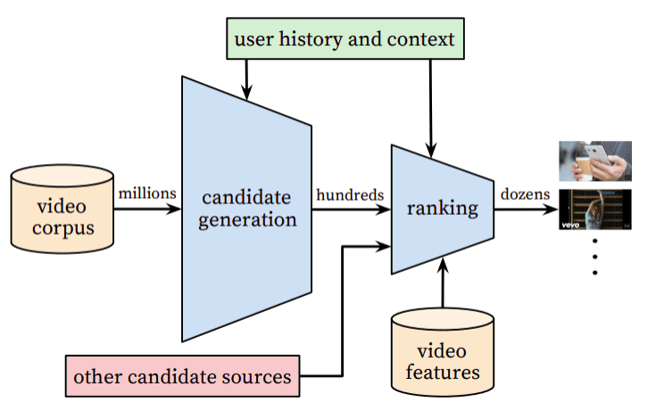
• • Three main steps of a recommender system:– Candidate generation → reducing the pool of candidates from a large number to a smaller one, e.g., from billions of videos to hundreds or thousands* The model needs to evaluate queries quickly given the enormous size of the corpus.– Scoring → Another model scores candidates to select a set of items (on the order of 10s)* Since working on a smaller set of items → could use more precise model.– Ranking (re-ranking) → Post-processing of the results → e.g., removing items that the user explcitly disliked, etc. → Re-ranking could help ensure diversity, freshness, and fairness.• Item (or document) → the entities a system recommends.– e.g., products, videos, etc.• Query (or context) → the information a system uses to make recommendations.– e.g., user information (user_id, items user previously interacted with), additional context → time of day, user's device• Deep Neural Network for YouTube Recommendation[Back To Top]1. Candidate Generation• First stage of recommendations → usually achieved by finding features for users that relate to features of the items → selecting a set of items that are likely to be recommended to a user → typically performed after user preferences have been collected → filtering a large set of potential recommendations down to a more manageable number.• Goal of candidate generation → reducing the number of potential candidates to a more manageable number while still ensuring the most relevant recommendations are included.• Two common approaches:– Content-based Filtering (CBF) → Uses similarity between items to recommend items similar to what the user likes →If user A watches two cute cat videos, the system can recommend cute animal videos to that user.– Collaborative Filtering (CF) → Uses similarities between queries and items simultaneously to provide recommendations → If user A is similar to user B, and user B likes video 1, then the system can recommend video 1 to user A (even if user A hasn't seen any video similar to video 1)[Back To Top]1.1. Embedding Space• Both CBF and CF map each item and each query (or context) to an embedding vector in a common embedding space (typically low-dimensional) → captures latent structure of the item/query set.– The notion of "closeness" is defined by similarity.1.1.1. Similarity Measures• The embeddings can be used for candidate generation as follows:– Given a query embedding (q) → system looks for item embedding (x) that are close to q. – Similarity methods → cosine, dot product, euclidean distance• Which similarity measures to choose?– Compared to cosine, dot product is more sensitive to the norm of the embeddings → the larger the norm (of an embedding), the higher the similarity.* NOTE: Popular items usually have larger embedding norms. If capturing popularity is important → dot product is preferred → however, to popular products dominating the recommendations a variant of it can be used → s(q,x)=||q||𝛼||x||𝛼cos(q,x) for 𝛼∈(0,1).– Items that appear very rarely may not be updated frequently during training. Consequently, if they are initialized with a large norm, the system may recommend rare items over more relevant items. To avoid this problem, be careful about embedding initialization, and use appropriate regularization.[Back To Top]1.2. Content-based Filtering• Content-based filtering uses the similarity between items to recommend items similar to what a user likes.• Uses item features to recommend.– It doesn't use any information about the user.– The recommendations are user-specific (based on previous interaction with the items).• Typically, each item with its features is mapped to a low-dimensional embedding space → Then, using a similarity measure (dot product, Euclidean distance, etc.), one can identify items in the same neighborhood on the embedding space and suggest those items to the users.• To do CBF → we should create a matrix of items (on the rows) and features (on the columns). We also add the user to that matrix.– Let's say, if we use dot product as a similarity measure, then the dot product of user vector with the items that have the most common features will be the largest.
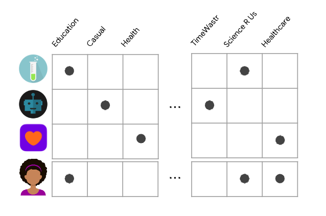
• Advantages:– Easier to scale (since it's not using user data).– Since it's user-specific, it can capture the specific interests → can recommend niche items.– It can be used effectively in situations where there is limited or no data on user behavior, such as in new or niche domains where there may not be a large user base.• Disadvantages:– Since item features are hand engineered, it requires a lot of domain knowledge to create good features → model can only be as good as the engineered features.– Limited ability to expand on user's existing interests.1.2.1. Example: CBF to Recommend Movies• Source• Below slides show how we can create a recommender algorithm that learns to match users to items via deep learning.
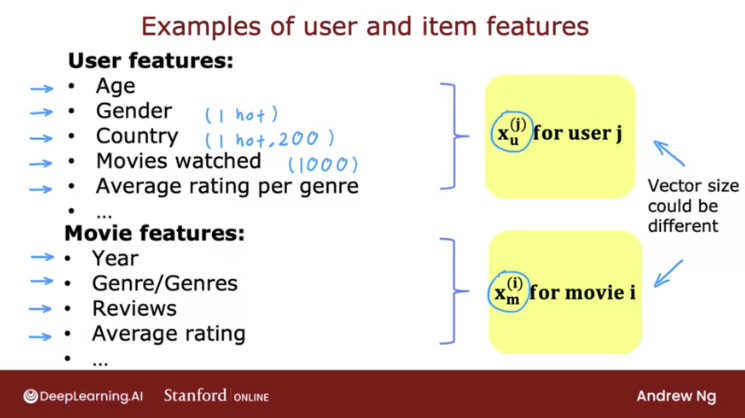
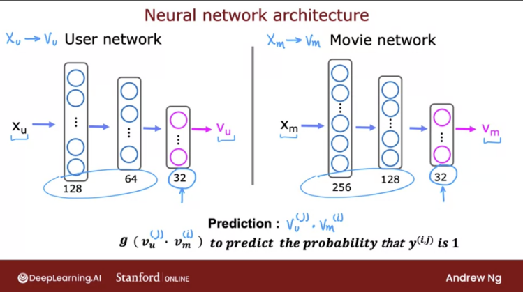
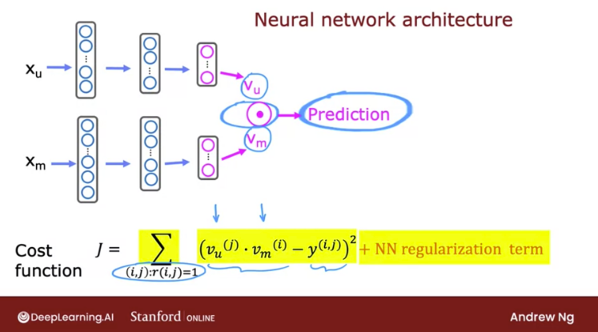
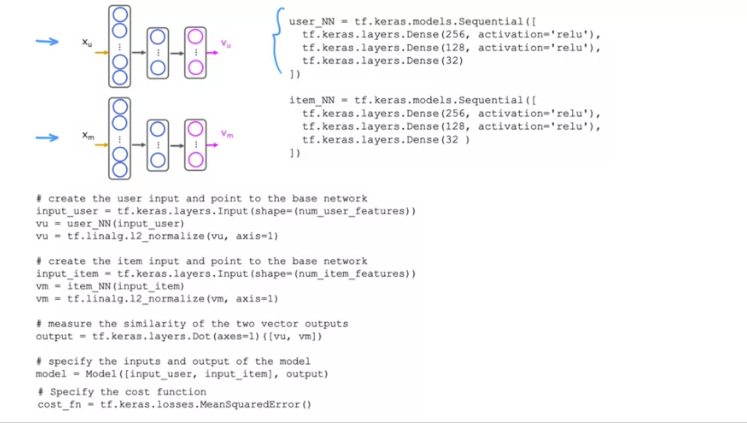
1.2.2. Code Deep-dive• Source• Import packages and load datasets:• •
import numpy as npimport numpy.ma as mafrom numpy import genfromtxtfrom collections import defaultdictimport pandas as pdimport tensorflow as tffrom tensorflow import kerasfrom sklearn.preprocessing import StandardScaler, MinMaxScalerfrom sklearn.model_selection import train_test_splitimport tabulatefrom recsysNN_utils import*pd.set_option("display.precision",1)# Load Data, set configuration variablesitem_train, user_train, y_train, item_features, user_features, item_vecs, movie_dict, user_to_genre = load_data()num_user_features = user_train.shape[1]-3# remove userid, rating count and ave rating during trainingnum_item_features = item_train.shape[1]-1# remove movie id at train timeuvs =3# user genre vector startivs =3# item genre vector startu_s =3# start of columns to use in training, useri_s =1# start of columns to use in training, itemsscaledata =True# applies the standard scalar to data if trueprint(f"Number of training vectors: {len(item_train)}")
• Let’s take a quick look at our feature vectors and data:• •
[user id][rating count][rating ave] Act ion Adve nture Anim ation Chil dren Com edy Crime Docum entary Drama Fan tasy Hor ror Mys tery Rom ance Sci -Fi Thri ller2164.13.95.00.00.04.04.24.04.00.03.04.00.04.23.92164.13.95.00.00.04.04.24.04.00.03.04.00.04.23.92164.13.95.00.00.04.04.24.04.00.03.04.00.04.23.92164.13.95.00.00.04.04.24.04.00.03.04.00.04.23.92164.13.95.00.00.04.04.24.04.0
• Data preprocessing step:• •
# scale training dataif scaledata: item_train_save = item_train user_train_save = user_train scalerItem = StandardScaler() scalerItem.fit(item_train) item_train = scalerItem.transform(item_train) scalerUser = StandardScaler() scalerUser.fit(user_train) user_train = scalerUser.transform(user_train)print(np.allclose(item_train_save, scalerItem.inverse_transform(item_train)))print(np.allclose(user_train_save, scalerUser.inverse_transform(user_train)))item_train, item_test = train_test_split(item_train, train_size=0.80, shuffle=True, random_state=1)user_train, user_test = train_test_split(user_train, train_size=0.80, shuffle=True, random_state=1)y_train, y_test = train_test_split(y_train, train_size=0.80, shuffle=True, random_state=1)print(f"movie/item training data shape: {item_train.shape}")print(f"movie/item test data shape: {item_test.shape}")# movie/item training data shape: (46549, 17)# movie/item test data shape: (11638, 17)
• Constructing the neural network model:• •
# GRADED_CELL# UNQ_C1num_outputs =32tf.random.set_seed(1)user_NN = tf.keras.models.Sequential([ tf.keras.layers.Dense(256, activation='relu'), tf.keras.layers.Dense(128, activation='relu'), tf.keras.layers.Dense(num_outputs),])item_NN = tf.keras.models.Sequential([ tf.keras.layers.Dense(256, activation='relu'), tf.keras.layers.Dense(128, activation='relu'), tf.keras.layers.Dense(num_outputs),])# create the user input and point to the base networkinput_user = tf.keras.layers.Input(shape=(num_user_features))vu = user_NN(input_user)vu = tf.linalg.l2_normalize(vu, axis=1)# create the item input and point to the base networkinput_item = tf.keras.layers.Input(shape=(num_item_features))vm = item_NN(input_item)vm = tf.linalg.l2_normalize(vm, axis=1)# compute the dot product of the two vectors vu and vmoutput = tf.keras.layers.Dot(axes=1)([vu, vm])# specify the inputs and output of the modelmodel = Model([input_user, input_item], output)model.summary()
• Making predictions (top-rated movies for a new user defined below):• •
new_user_id =5000new_rating_ave =1.0new_action =1.0new_adventure =1new_animation =1new_childrens =1new_comedy =5new_crime =1new_documentary =1new_drama =1new_fantasy =1new_horror =1new_mystery =1new_romance =5new_scifi =5new_thriller =1new_rating_count =3user_vec = np.array([[new_user_id, new_rating_count, new_rating_ave, new_action, new_adventure, new_animation, new_childrens, new_comedy, new_crime, new_documentary, new_drama, new_fantasy, new_horror, new_mystery, new_romance, new_scifi, new_thriller]])# generate and replicate the user vector to match the number movies in the data set.user_vecs = gen_user_vecs(user_vec,len(item_vecs))# scale the vectors and make predictions for all movies. Return results sorted by rating.sorted_index, sorted_ypu, sorted_items, sorted_user = predict_uservec(user_vecs, item_vecs, model, u_s, i_s, scaler, scalerUser, scalerItem, scaledata=scaledata)print_pred_movies(sorted_ypu, sorted_user, sorted_items, movie_dict, maxcount =10)
•
y_p movie id rating ave title genres4.86762649693.61765 Yes Man (2008) Comedy4.86692691223.63158 Hangover, The (2009) Comedy|Crime4.86477631313.625 Role Models (2008) Comedy4.85853607563.55357 Step Brothers (2008) Comedy4.85785681353.5517 Again (2009) Comedy|Drama4.85178782093.55 Get Him to the Greek (2010) Comedy4.8513886223.48649 Fahrenheit 9/11 (2004) Documentary4.8505670873.52941 I Love You, Man (2009) Comedy4.85043697843.65 Brüno (Bruno)(2009) Comedy4.84934898643.6315850/50 (2011) Comedy|Drama
• Making predictions (for an existing user):• •
uid =36# form a set of user vectors. This is the same vector, transformed and repeated.user_vecs, y_vecs = get_user_vecs(uid, scalerUser.inverse_transform(user_train), item_vecs, user_to_genre)# scale the vectors and make predictions for all movies. Return results sorted by rating.sorted_index, sorted_ypu, sorted_items, sorted_user = predict_uservec(user_vecs, item_vecs, model, u_s, i_s, scaler, scalerUser, scalerItem, scaledata=scaledata)sorted_y = y_vecs[sorted_index]#print sorted predictionsprint_existing_user(sorted_ypu, sorted_y.reshape(-1,1), sorted_user, sorted_items, item_features, ivs, uvs, movie_dict, maxcount =10)
•
y_p y user user genre ave movie rating ave title genres3.13.0363.002.86 Time Machine, The (2002) Adventure3.03.0363.002.86 Time Machine, The (2002) Action2.83.0363.002.86 Time Machine, The (2002) Sci-Fi2.31.0361.004.00 Beautiful Mind, A (2001) Romance2.21.0361.504.00 Beautiful Mind, A (2001) Drama1.61.5361.753.52 Road to Perdition (2002) Crime1.62.0361.753.52 Gangs of New York (2002) Crime1.51.5361.503.52 Road to Perdition (2002) Drama1.52.0361.503.52 Gangs of New York (2002) Drama
[Back To Top]1.3. Collaborative Filtering• Collaborative filtering (CF) is a traditional approach that follows a simple principle: We should recommend items to a client based on the inputs or actions of other clients (preferably similar ones).• • It uses similarities between users and items simultaneously.– It can recommend an item to user A based on the interests of a similar user B.– This allows for serendipitous recommendations.– Embeddings can be learned automatically → This is the power of CF models.• The goal of CF is to generate two vectors:– A parameter vector for each user that embodies the item's tastes of a user.– A feature vector for each item which embodies some description of the item.– The dot product of the two vectors plus the bias term should produce an estimate of the rating the user might give to that item.• Advantages:– It can be used effectively in situations where there is limited information on item attributes or where the user base is large and diverse.– CF can provide serendipitous recommendations since it can suggest items that a user may not have discovered otherwise.– No prior domain knowledge is needed as embeddings are learned automatically.• Disadvantages:– It may not be effective in situations where there is limited or no data on user behavior or where users have unique preferences that are not shared by others.– It may suffer from the “cold start” problem, where new items or users have limited data available, making it difficult to recommend items accurately.* Cold start problem → If the item/document has not been seen during training, our model can not create an embedding from it and can not query the model for this item.· Mean Normalization can help with this. · Another solution is to show some reasonable items to the new users and have them rate a few items.· You can also use the user’s information (demographics, expressed preferences, web browser they are using, their IP) to recommend them reasonable items.1.3.1. Memory-based CF• One approach is to look at similar users and recommend items that they like. This is called user-based CF.• A different approach is to find similar items based on ratings given by other users. This is called item-based CF.• You can imagine that traditional machine learning methods such as k-Nearest Neighbors (k-NN) to find similar users or items.1.3.2. Model-based CF• Model-based CF tries to model the interaction matrix between items and users. Each user and item can be mapped into an embedding space based on their features.• The embeddings can be learned using a machine learning model so that close embeddings will correspond to similar items/users.• Matrix factorization falls into the category of model-based CF.1.3.3. A Movie Recommender System Using CF• Training data is in form of a matrix where:– Each row represents a user– Each column represents a movie– The value of each cell is the feedback about a movie by a user. Feedbacks are two types:* Explicit* Implicit– For simplicity, we can consider a binary feedback matrix.– The recommendations are:* Similar movies based on what user has liked in the past* Movies that similar users liked• In CF, we represent both items and users in the same embedding space → you can think of embedding space as an abstract representation common to both users and items.• What does "collaborative" mean in collaborative filtering?– The collaborative nature of this approach is apparent when the model learns the embeddings. – Suppose the embedding vectors for the movies are fixed. * Then, the model can learn an embedding vector for the users to best explain their preferences. * Consequently, embeddings of users with similar preferences will be close together. – Similarly, if the embeddings for the users are fixed, then we can learn movie embeddings to best explain the feedback matrix. – As a result, embeddings of movies liked by similar users will be close in the embedding space.[Back To Top]1.4. Matrix Factorization• In simple terms, Matrix Factorization (MF) algorithms work by decomposing the user-item interaction matrix into the product of two lower dimensionality rectangular matrices.• Suppose:– A ∈ Rm×n → interaction matrix where m → number of users, n → number of items.– U ∈ Rm×d → user embedding with d dimensions– V ∈ Rn×d → item embedding with d dimensions• The model tries to learn matrices U and V so that UVT=A.• Note: In practice, we also introduce a set of biases bu and bv for users and items, respectively.• The simplest loss function is the squared distance → minU,V||A-UVT||This part is from Google. Complete later.• It's a simple embedding model.• Given a feedback matrix Am×n, m → number of users (queries), n → number of items, the model learns:– A user embedding matrix (Um×d)– An item embedding matrix (Vn×d)• The embeddings are learned such that the product UVT is a good approximation of the feedback matrix.– Note that the (i,j) entry of UVT is simply the dot product of ⟨Ui,Vj⟩.• How does matrix factorization create an embedding?– Matrix factorization typically gives a more compact representation than learning the full matrix. – The full matrix has O(nm) entries, while the embedding matrices U, V have O((n+m)d) entries, where the embedding dimensiond is typically much smaller than m and n. – As a result, matrix factorization finds latent structure in the data, assuming that observations lie close to a low-dimensional subspace. – In the preceding example, the values of n, m, and d are so low that the advantage is negligible. In real-world recommendation systems, however, matrix factorization can be significantly more compact than learning the full matrix.1.4.1. Choosing the Objective Function[Back To Top]1.5. Deep Learning-based RecSys• Deep networks are excellent feature extractors and that’s why they are ideal for recommendation systems.• They're also excellent at capturing contextual information.1.5.1. Deep Content-based Recommendation• Using NN, we can construct high-quality low-dimensional embeddings and recommend items close in the embedding space.– Spotify has used a similar approach.• This idea can be extended into content embeddings (Content2Vec) where we can represent all kinds of items in an embedding space; whether the items are images, text, songs etc.– Then we use a pair-wise item similarity metric to generate recommendations.– Transfer learning can obviously play a major role in this approach.[Back To Top]1.6. Wide and Deep Learning• Wide and Deep Networks were originally proposed by Google and is an effort to combine traditional linear models with deep models.• Shallow linear models are good at capturing and memorizing low-order interaction features, while deep networks are great at extracting high-level features.• Wide and Deep models have proven to work very well for classification problems with sparse inputs such as recommender systems.
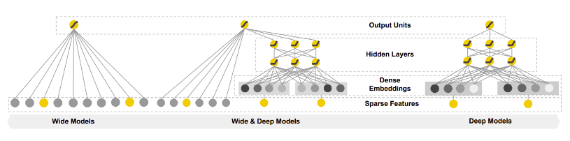
• Wide models are generalized linear models with non-linear transformations and they are trained on a wide set of cross-product transformations.– The goal is to memorize specific useful feature combinations.• Deep models are learning items and user embeddings, which makes them able to generalize in unseen pairs without manual feature engineering.• The fusion of wide and deep models combines the strengths of memorization and generalization, and provides us with better recommendation systems.– The two models are trained jointly with the same loss function.• Movie recommender example– Let’s assume that we want to recommend movies to users (e.g. we’re building a system for Netflix). – Intuitively we can think that wide models will memorize things such as: “Bob liked Terminator 2” or “Alice hated The Avengers”. – Or the other hand, deep models will capture generic information such as: “Most teenage boys like action films” or “Middle-age women don’t like superhero movies”. – The combination of these two helps us acquire better recommendations.[Back To Top]1.7. Deep Factorization Machines (DeepFm)• Let's first discuss simple Factorization Machines.1.7.1. Factorization Machines (FM)• Factorization Machines is a generalized version of the linear regression model and the matrix factorization model.• It improves upon them by supporting “n-way” variable interactions where n is the polynomial degree of the model.– Usually, we use a degree of 2 but higher ones are also possible.y(x)=w0+d∑i=1wixi+d∑i=1d∑j=i+1⟨vi,vj⟩xixj• Where:– w0 → global bias– wi → weights of the i-th variable– vi → the i-th row of the features embeddings matrix V, and k the dimensionality of the feature embeddings.• It is obvious from the equation that the first two-terms correspond to the traditional linear regression. The last term corresponds to the matrix factorization model if we assume that vi is a user embedding and vj an item embedding. Their dot-product models their interaction (similarity).1.7.2. DeepFM• Deep Factorization Machines (DeepFM) improve upon the aforementioned idea by using Deep Neural Networks. DeepFM consists of an FM component and a deep network.• The FM component is identical to the one mentioned in the FM section and aims to model low-order interactions between the features. • The deep network is a standard MLP that aims to model high-level interactions.• The final prediction of the model is the summation from both subcomponents:• y= 𝜎(y(FM)+y(DNN))• • Pretty similar to wide and deep network!
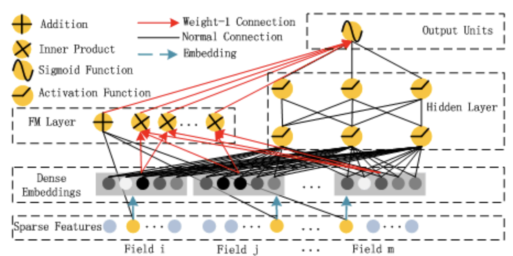
Figure 1:Wide and Deep Architecture of DeepFM
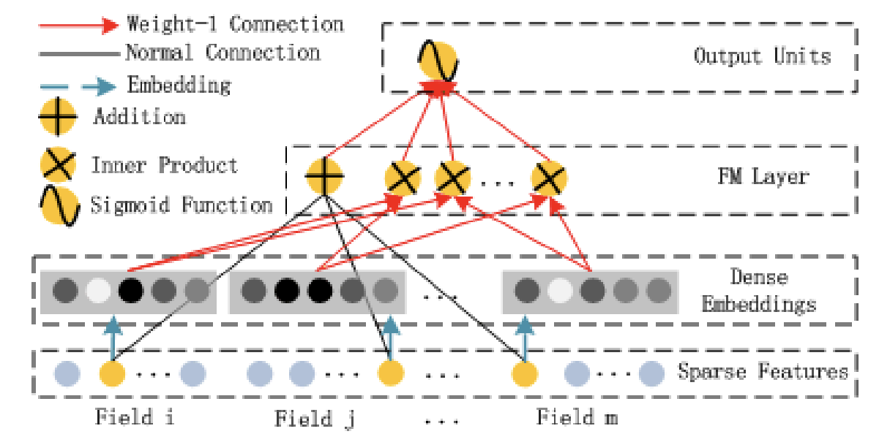
Figure 2:FM Component
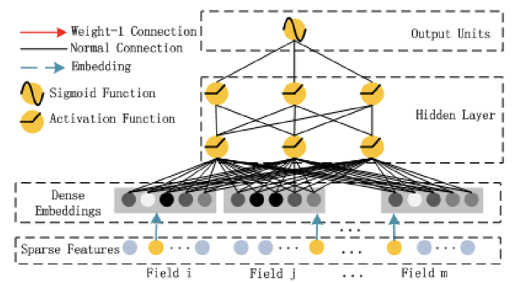
Figure 3:Deep Component
[Back To Top]1.8. Neural Collaborative Filtering• Neural Collaborative Filtering is an extension of CF that uses implicit feedback and neural networks.• Implicit feedback is the feedback that the user doesn’t specifically give but is inherited from the user’s behavior. Examples include user actions, clicks, browsing history, search patterns, etc.
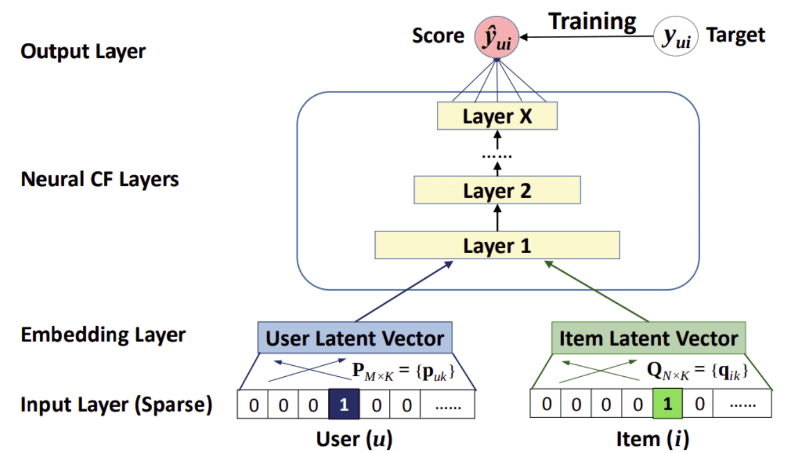
1.8.1. NeuMF• The most common model is called NeuMF, short for neural matrix factorization, and aims to replace standard matrix factorization with neural networks.• • Specifically, it consists of two submodels: – A Generalized Matrix Factorization (GMF) model * The GMF is a neural network approach of matrix factorization where the input is an element-wise product of the user and item embeddings and the output is a prediction score that maps the interaction between the user and the item.– A traditional MLP model* The MLP model serves as an extra layer on modeling the user-item interaction. * It concatenates the user and item embeddings and through the addition of more non-linear layers, it models the collaborative filtering effect.* • To fuse the two models, no embeddings were shared in fear of limiting the model’s capacity. Instead, NeuMFconcatenates the second last layers of two subnetworks to create a final interaction score. – This way, we can generate a ranked recommendation list for each user based on the implicit feedback.•
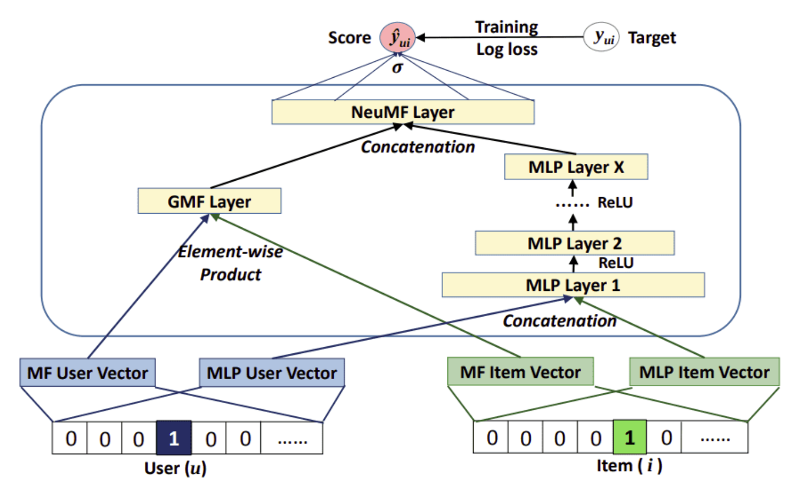
[Back To Top]1.9. Autoencoders for RecSys• The most famous example is AutoRec, which extends the basic CF paradigm with the expressiveness of deep networks.• AutoRec follows the traditional architecture of Autoencoders in the sense that it tries to reconstruct its input. But with one key difference: It accepts only a single row/column of the interaction matrix as an input and then tries to reconstruct the entire interaction matrix.• Contrary to the traditional architecture, the end goal isn’t to find the compact latent representation of the input. • Here we primarily care about its output: the interaction matrix between users and items. • AutoRec can be thought as modeling the matrix factorization algorithm with autoencoders.• Note that here we only make use of explicit feedback.
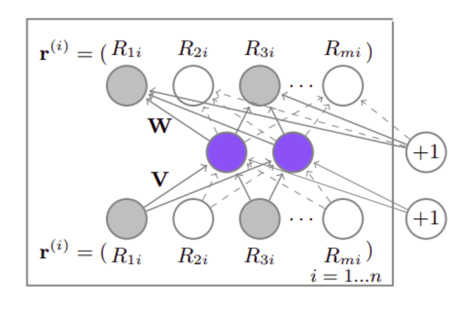
• We can represent the model’s architecture as:• h(r,𝜃)=f(W.g(Vr+𝜇)+b)• Where:– h(r,𝜃) → reconstruction function– r → input– V, W → weight matrices– f,g → activation functions– 𝜇,b → bias terms• The network is trained with a regularized reconstruction loss in the form of:• min𝜃n∑i=1||r(i)-h(r(i);𝜃)||2O+𝜆
• The input of sequence-aware recommendation systems is usually an ordered list of the user's past interactions. • These interactions can be associated with specific items or not. • The output is a ranked list of items in a similar way to most aforementioned strategies. • Contextual information can also be added to the mix in the form of context embeddings.• Sequence aware systems can be divided into different categories:– Context-aware or not– Short-term or Long-term– Session-based or not• • Sequence-aware systems can model the users behavior very effectively and in many cases outperform CF-based systems. • A hybrid system consisting of both approaches usually works even better.• SOTA sequence-based models include: – GRU4Rec– BERT4Rec– SASRec[Back To Top]1.11. Deep and Cross Network (DCN)• As we have already discussed, modeling interactions between features give us better recommendations compared to using single features → sometimes is referred to as cross-feature.• A cross-feature is a combination of 2 or more features which provides additional interaction information beyond individual features. A combination of 2 individual features is a 2nd degree cross-feature.• Deep and Cross Network (DCN) is an architecture proposed by Google and is designed to learn explicit cross-features in an effective manner. • • As with many previous models, we have two submodules: – Cross-network– Deep network → A traditional multilayer perceptron– • We can either stack the two networks on top of each other or combine their final prediction. The figure below follows the first approach.
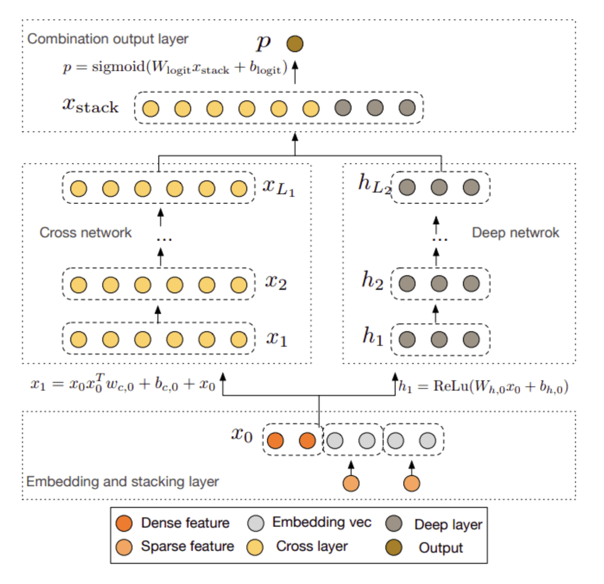
• The cross-network takes advantage of a very powerful idea → it applies feature crossing at each layer. – As the layer depth increases, the degrees of feature crossing increase as well. – The original paper provides an intuitive image of how the cross-layer works:
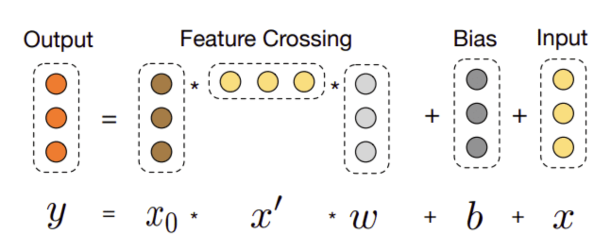
• The input x is interacting with the original input x0 producing higher-order cross features. • The input x is also added back to the output in a type of residual connection. • Therefore, the output y is a higher-order feature that is passed to the next layer.• The authors present DCN as an extension of factorization machines. The FM is limited in representing cross-terms of degree 2. DCN, in contrast, is able to construct cross-terms of a higher degree.[Back To Top]1.12. DLRM• Deep Learning Recommendation Model (DLRM) was initially proposed by Facebook. • It originates from two different perspectives: – Recommendation systems – Predictive analytics – • Predictive analytics rely on statistical models to predict the probability of events based on the given data. • In conjunction with traditional recommendation strategies, we can build highly personalized recommendations.
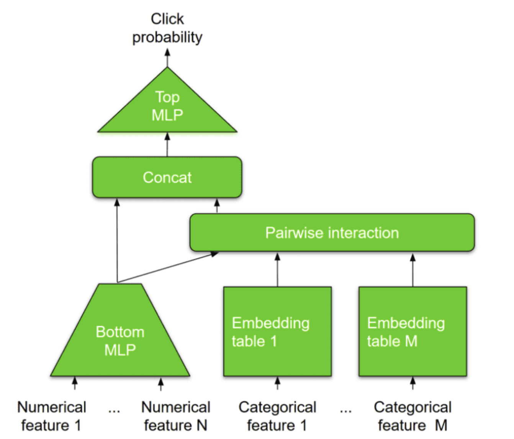
• Numerical and Dense features are processed through a Multi-Layer Perceptron (MLP). • Categorical and sparse features are modeled through embedding tables. • The interaction between all features is computed by taking the dot-product between all pairs, following the principles of factorization machines.• The dot-products are then concatenated with the original processed dense features and then transformed into a final probability using another MLP.[Back To Top]1.13. Graph Neural Networks (GNN) for Recommendations• Intuition → the available data and features might be better represented in a graph structure.• Graph neural networks can be used to model feature interactions and generate high-quality embeddings for all users and items.• GNNs can be used for different types of recommendations. – General recommendations disregard the notion of time and deals only with user-item interactions and contextual information. – Sequential recommendation, on the other hand, seeks to capture transitional patterns in the user’s behavior.
2. Ranking/Scoring• This is the step after candidate generation → use another model to score and rank the candidates in order to select a set of items to present to the user.– For example, the system can train a model that predicts the likelihood of a user watching a video on YouTube based on query features (e.g. user watch history, language, country, time) and video features (e.g. title, tags, video embedding).• Scoring is typically more focused on personalized recommendations and may use more sophisticated machine learning models to capture complex user preferences and item relationships. • • The system may utilize multiple candidate generators. Example:❏ Related items from matrix factorization* Extract latent factors that represent user preferences and item attributes.* The matrix is factorized into two representation matrices: users, and items.* The dot product of these two matrices generates a score for each uer-item pair.❏ User-specific features for personalization* Features such as age, gender, and past search queries can be used to generate personalized recommendations.❏ Geographic information for considering "local" vs. "distant" items* Identify items that are geographically close to the user or are relevant to the user’s location.* For example, a recommendation system for a restaurant app can use the user’s location to identify nearby restaurants.❏ Popular/trending items* This approach can be useful for introducing users to new and popular items.❏ Social graph data that considers items liked or recommended by friends* This approach can be particularly useful for social media and e-commerce applications, where users may be influenced by the recommendations of their friends and peers.[Back To Top]2.1. Scoring vs. Ranking• Scoring refers to the process of assigning a score or a rating to each item in the candidate pool based on its similarity to the user’s preferences or past behavior. – The scoring function can be based on different factors such as content similarity, collaborative filtering, or a combination of both. – The scoring function is used to determine the relevance of each item to the user, and items with higher scores are considered to be more relevant.– • Ranking is the process of ordering the items based on their scores. – The items with the highest scores are ranked at the top of the recommendation list, while the items with the lowest scores are ranked at the bottom. – The ranking process ensures that the most relevant items are presented to the user first.2.1.1. Why Not Let the Candidate Generator Score?• Since candidate generators compute a score (such as the similarity measure in the embedding space), you might be tempted to use them to do ranking as well. However, you should avoid this practice for the following reasons:– The system might use multiple candidate generators that use different sources. Therefore, the scores may not be comparable → making it challenging to rank.– With a smaller pool of candidates, the system can use more features and a more complex model. [Back To Top]2.2. Scoring Objective Function• The scoring function should be designed to capture the user’s preferences and produce accurate predictions of the likelihood that a user will interact with a particular item.• The objective function can be based on various factors such as user preferences, historical data, or contextual information.• The choice of scoring function in recommendation systems can significantly impact the quality of recommendations.– For instance, if the scoring function is focused on maximizing click rates, the system may recommend click-bait videos that do not provide a good user experience and can quickly lose users’ interest.– Similarly, optimizing for watch time alone may lead to recommendations of very long videos, also leading to a poor user experience.[Back To Top]2.3. Scoring Methods• Cosine Similarity → A common similarity measure used in content-based filtering to calculate the similarity between the features of items and user preferences.• Weighted Average Score → Weighted average is a method of calculating a single score for a set of items, where each item is assigned a weight based on its importance and so, this means that items that are more relevant to the user should have a higher weight in the calculation of the final score. – To use weighted average in a recommender system, first, the relevance of each item to the user needs to be determined. – This can be done through user feedback, such as ratings, reviews, or clicks. – Each item is assigned a relevance score based on this feedback.– Next, weights are assigned to each item based on their importance. * The importance can be determined based on different factors, such as popularity, novelty, or profitability. * For example, popular items can be assigned a higher weight because they are likely to be more relevant to a larger number of users.– Finally, the weighted average score is calculated by multiplying the relevance score of each item by its weight, summing up the products, and dividing the result by the sum of weights. – The resulting score represents the overall relevance of the set of items to the user.– Weighted average can be used for both scoring and ranking in a recommender system. * In scoring, the weighted average score can be used to represent the relevance of a set of items to a user. * In ranking, the items can be sorted based on their weighted average scores, with the highest scoring items appearing at the top of the list.• Factorization Machines → A popular algorithm for scoring that models where the interactions between features and allows for non-linear relationships.
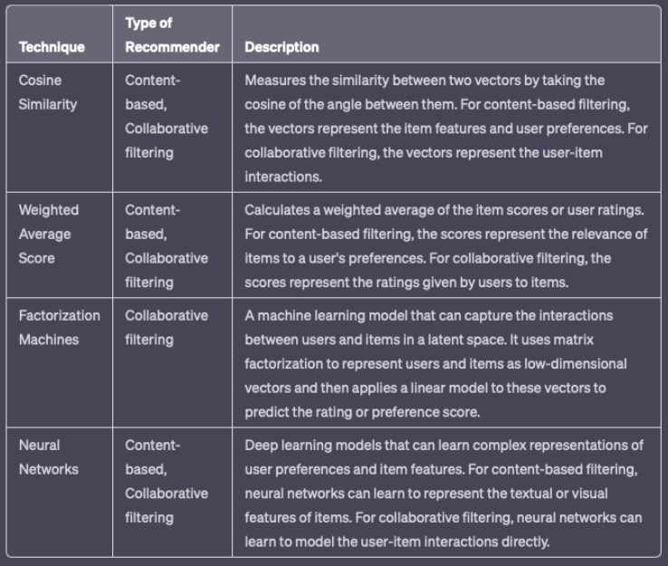
[Back To Top]2.4. Ranking• Ranking can be done over multiple stages (which is typical in industry use-cases that rely on recommendations for monetization and success of their product).• In the simplest dual-stage scenario, the two stages may be called coarse and fine ranking.• Various ranking methods:– LTR– Multi-Armed Bandits (MAB)– Wide and Deep Networks– etc.• The first stage could involve LTR methods since they’re much easier to compute (and thus computation efficient) compared to other methods. Larger deep neural networks-based architectures are typically reserved for later stages.2.4.1. Instagram's Filtering Approach for Their "Explore" • Source• In the candidate generation stage, account embeddings are used to identify accounts similar to those the user has previously interacted with.– From these account candidates, they sample 500 media candidates (e.g., photos, stories).• Then, these media candidates go through a three-pass ranking process which uses a combination of techniques to shrink neural network models:1. First pass: A distilled model mimics the later stages with minimal features to return the top 150 ranked candidates.2. Second pass: A lightweight neural network uses the full set of dense features and returns the top 50 ranked candidates.3. Final pass: A deep neural network uses the full set of dense and sparse features to return the top 25 ranked candidates (for the first page of the Explore grid).[Back To Top]2.5. Learning To Rank (LTR)• LTR methods aim to predict the probability that a user will interact with an item, given their previous interactions and other contextual information. They can be classified into three categories:❏ Point-wise❏ Pair-wise❏ List-wise
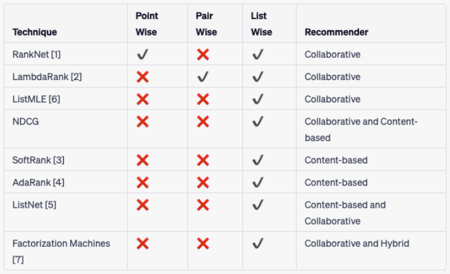
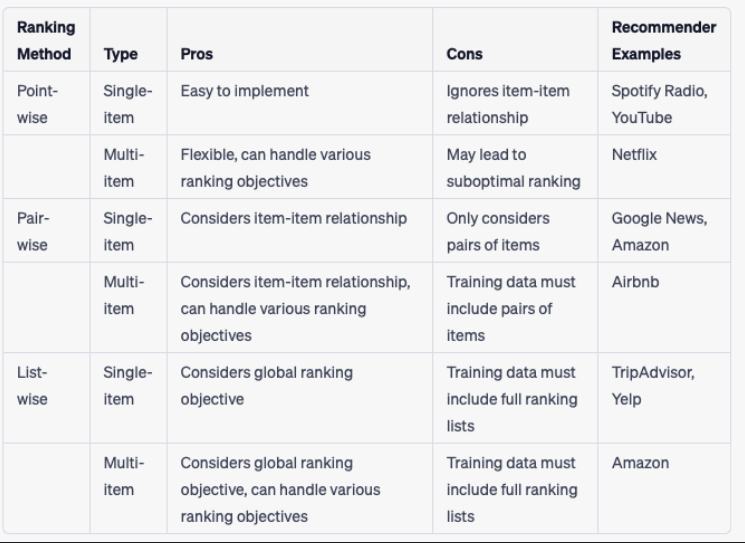
2.5.1. Point-wise Methods• It's the easiest method to implement, a wide range of regression and classification algorithms can be used.– Effective for cases where relevance of items are independent of each other.– Example use cases: ranking news articles, product recommendation.• These algorithms take features of the document and query as input and predict a relevance score or class label.• They evaluate items independently, ignoring the rank order of the other items.• A simple point-wise method could be a logistic regression, SVM, linear regression.• It's common where the focus is on predicting the relevance of a single document for a given query.• The final ranking is obtained by sorting the list of results based on their individual document scores.• Limitations:– No feature interactions (i.e. items interactions and how they compete for the same query) → no relative importance.• Gradient Boosted Trees (GBT)– It's a pointwise ranking algorithm commonly used for RecSys.– It aims to optimize a ranking metric such as NDCG.2.5.2. Pair-wise Methods• They compare items in pairs → goal is to learn a function that assigns a higher score to the preferred item in each pair.• Objective → to minimize the number of inversions in ranking, which occur when the pair of results are in the wrong order compared to the ground truth.• Example of pairwise ranking algorithms:– RankNet– RankBoost– RankSVM– LambdaRank– LambdaMART2.5.3. List-wise Methods• They treat the ranked list of items as a whole and optimize a scoring function that directly maps from the item set to a ranking score.• There are two main sub-techniques for implementing listwise Learning to Rank:– Direct optimization of information retrieval (IR) measures, such as Normalized Discounted Cumulative Gain (NDCG), which is a commonly used measure of ranking quality. This technique is used by algorithms such as SoftRank and AdaRank.– Minimizing a loss function that is defined based on an understanding of the unique properties of the ranking being targeted. For example, ListNet and ListMLE are algorithms that use this technique.2.5.4. Evaluation Metrics• Normalized Discounted Cumulative Gain (NDCG) → It's a listwise ranking metric.• Mean Reciprocal Rank (MRR)• Average Reciprocal Hit Rate (ARHR)[Back To Top]
3. Re-ranking• Re-rank candidates at the final stage of a RecSys to consider additional criteria or constraints.• It's used to improve the quality of recommendations by adjusting the order in which items are presented to users.• One additional factor could be item diversity:– For example, the system may choose to penalize the score of items that are too similar to each other, in order to encourage a more diverse set of recommendations.• Another one could be filtering out certain candidates:– For example, in a video recommender, one could train a separate model to detect click-bait videos, and then run this model on the initial candidate list. Videos that the model classifies as click-bait could then be removed from consideration.[Back To Top]3.1. Freshness• One way to re-rank recommendations is to consider the freshness of items. • This approach involves promoting newer items to the top of the list, which can be useful in contexts where users are more interested in up-to-date information or news.• Freshness-based re-ranking can be implemented using various algorithms, such as Bayesian personalized ranking (BPR) or matrix factorization (MF), and can be combined with other techniques like content-based filtering to improve the diversity of recommendations.• Some ways to add freshness:– Re-run training as often as possible to learn on the latest training data. * We recommend warm-starting the training so that the model does not have to re-learn from scratch. · Warm-startingcan significantly reduce training time. – Create an "average" user to represent new users in matrix factorization models. * You don't need the same embedding for each user—you can create clusters of users based on user features.– Use a DNN such as a softmax model or two-tower model. * Since the model takes feature vectors as input, it can be run on a query or item that was not seen during training.– Add document age as a feature. * For example, YouTube can add a video's age or the time of its last viewing as a feature.[Back To Top]3.2. Diversity• Another way to re-rank is based on diversity. • This is important because users often have varying preferences, and simply presenting them with the most popular or highly-rated items can lead to a lack of variety.• Diversity-based re-ranking algorithms can include techniques like clustering, where similar items are grouped together and presented in a balanced way to users.• If the system always recommend items that are “closest” to the query embedding, the candidates tend to be very similar to each other and will lack diversity which can cause a bad or boring user experience.– For example, if YouTube just recommends videos very similar to the video the user is currently watching, such as nothing but owl videos, the user will likely lose interest.• Some viable way to incorporate diversity are:– Train multiple candidate generators using different sources.– Train multiple rankers using different objective functions.– Re-rank items based on genre or other metadata to ensure diversity. (source), the user will likely lose interest.[Back To Top]3.3. Fairness• Your model should treat all users fairly. Therefore, make sure your model isn’t learning unconscious biases from the training data.• Some ways to improve fairness:– Include diverse perspectives in design and development.– Train ML models on comprehensive data sets. * Add auxiliary data when your data is too sparse (for example, when certain categories are under-represented).– Track metrics (for example, accuracy and absolute error) on each demographic to watch for biases.– Make separate models for underserved groups.[Back To Top]3.4. Personalization• It's another key aspect of re-ranking.• By understanding a user’s unique preferences, interests, and behavior, recommender systems can provide highly personalized recommendations that are more likely to be relevant and engaging.• Personalization-based re-ranking algorithms often rely on machine learning techniques like collaborative filtering or reinforcement learning to learn user preferences and adjust recommendations accordingly.• Methods to include personalization:– Collaborative filtering → commonly used in re-ranking to personalize recommendations for each user by considering their previous interactions with the system.– Content-based filtering → can be used in re-ranking to personalize recommendations based on the user’s preferences and interests.– Contextual bandits → This technique is a form of reinforcement learning that can be used for online learning and decision making. * Contextual bandits can be used in re-ranking to personalize recommendations based on the user’s context, such as the time of day, location, or device.– Hybrid RecSys → These systems combine multiple recommendation techniques to provide personalized recommendations to users. * Hybrid recommender systems can be used in re-ranking to combine the strengths of different techniques and provide more accurate and personalized recommendations.3.4.1. Patterns of Personalizations• Source• • Bandits → continuously learn via exploration– Multi-armed bandits and contextual bandits are approaches that aim to balance exploration and exploitation in decision-making. * Multi-armed bandits explore different actions to learn their potential rewards and exploit the best action for maximizing overall reward. * Contextual bandits go further by considering the context before each action, incorporating information about the customer and environment to make informed decisions.– Bandits offer advantages over batch machine learning and A/B testing methods, as they minimize regret by continuously learning and adapting recommendations without the need for extensive data collection or waiting for test results. – They can provide better performance in situations with limited data or when dealing with long-tail or cold-start scenarios, where batch recommenders may favor popular items over potentially relevant but lesser-known options.– Netflix → Netflix utilizes contextual bandits to personalize images for shows. * The bandit algorithm selects images for each show and observes how many minutes users spend watching the show after being presented with the chosen image. * The bandit algorithm takes into account various contextual factors such as user attributes (titles played, genres, country, language preferences), day of the week, and time of day.* For offline evaluation, Netflix employs a technique called replay. · They compare the bandit’s predicted image for each user-show pair with the randomly assigned images shown during the exploration phase. · If there is a match, it is considered a predicted-random match and can be used for evaluation. · The main evaluation metric is the number of quality plays (user watching the show) divided by the number of impressions (images recommended).* Replay allows for unbiased evaluation by considering the probability of each image shown during exploration. · This helps control for biases in image display rates. · However, replay requires a significant amount of data, and if there are few matches between predicted and random data, there can be high variance in evaluation metrics. · Techniques like doubly robust estimation can be employed to mitigate this issue.– DoorDash → Doordash implemented a contextual bandit approach for cuisine recommendations, incorporating multiple geolocation levels. * The bandit algorithm explores by suggesting new cuisine types to customers to assess their interest and exploits by recommending their most preferred cuisines.* To capture the average cuisine preference in each location, Doordash introduced multiple levels in their bandit system, such as district, submarket, market, and region. · These geolocation levels provide prior knowledge, allowing the bandit to represent cold-start customers based on the location’s prior preferences until sufficient data is collected for personalized recommendations.· The geolocation priors enable Doordash to strike a balance between a customer’s existing preferences and the popular cuisines specific to each location. · For example, if a sushi-lover orders food from a new geolocation, they may be exposed to the local hot favorite (e.g., fried chicken), combining their preferences with the regional popularity.– Spotify → Spotify utilizes contextual bandits to determine the most effective recommendation explanations, known as “recsplanations,” for its users. * The challenge is to personalize music recommendations while considering the associated explanation, with user engagement as the reward. * Contextual features, such as user region, device platform, listening history, and more, are taken into account.* Initially, logistic regression was employed to predict user engagement based on a recsplanation, incorporating data about the recommendation, explanation, and user context. * However, regardless of the user context, logistic regression resulted in the same recsplanation that maximized the reward.· To overcome this limitation, higher-order interactions between the recommendation, explanation, and user context were introduced. · This involved embedding these variables and incorporating inner products on the embeddings, representing second-order interactions. · The second-order interactions were combined with first-order variables using a weighted sum, creating a second-order factorization machine. · Spotify explored both second and third-order factorization machines for their model.* To train the model, sample reweighting was implemented to account for the non-uniform probability of recommendations in production, as they did not have access to uniform random samples like in the Netflix example. * During offline evaluation, the third-order factorization machine outperformed other models. * In online evaluation through A/B testing, both the second and third-order factorization machines performed better than logistic regression and the baseline. However, there was no significant difference between the second and third-order models.• Embedding + MLP → learning embeddings, pooling them.– One common approach is the embedding + multilayer perceptron (MLP) paradigm. – In this paradigm, sparse input features like items, customers, and context are transformed into fixed-size embedding vectors. – Variable-length features, such as sequences of user historical behavior, are compressed into fixed-length vectors using techniques like mean pooling. – These embeddings and features are then fed into fully connected layers, and the recommendation task is typically treated as a classification problem.– Various companies have adopted this paradigm in different ways. * TripAdvisor → uses it to recommend personalized experiences (tours). · They train general-purpose item embeddings using StarSpace and fine-tune them for the specific recommendation task. · They also apply exponential recency weighted average to compress varying-length browsing histories into fixed-length vectors. · The model includes ReLU layers and a final softmax layer for predicting the probability of each experience.* YouTube → applies a similar approach to video recommendations but splits the process into candidate generation and ranking stages. · In candidate generation, user interests are represented using past searches and watches, and mean pooling is applied to obtain fixed-size vectors. · Several fully connected ReLU layers and a softmax layer are used to predict the probability of each video being watched. · Negative sampling is employed to train the model efficiently. · Approximate nearest neighbors are used during serving to find video candidates for each user embedding.· For ranking, video embeddings are averaged and concatenated with other features, including the video candidate from the candidate generation step. · ReLU layers and a sigmoid layer weighted by observed watch time are used to predict the probability of each video being watched. · The output is a list of candidates and their predicted watch time, which is then used for ranking.* Alibaba’s Deep Interest Network → addresses the challenge of compressing variable-length behaviors into fixed-length vectors by introducing an attention layer. · This allows the model to learn different representations of the user’s interests based on the candidate ad. · The attention layer weighs historical user behavior, enabling the model to assign importance to different events. · The network is an extension of a base model inspired by YouTube’s recommender. · In offline and online evaluations, the deep interest network with the attention layer outperformed the base model in terms of AUC, click-through rate, and revenue per mille.
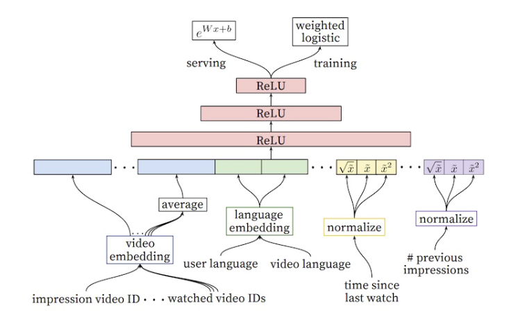
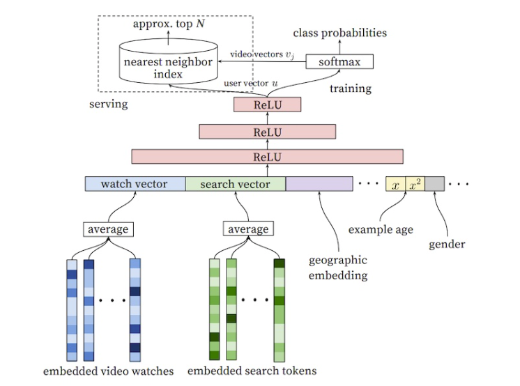
• Sequential → learning about item order in a sequence– An alternative to pooling variable-length user behavior events is to use sequential models like recurrent neural networks (RNNs). – However, RNNs have the limitation of sequential processing, where each event in the sequence depends on the hidden state of the previous event. – The Transformer, introduced positional encodings to overcome this limitation and allow parallel processing of events.– In the context of session-level recommendations, Telefonica researchers explored the use of Gated Recurrent Units (GRUs). * Since many real-world recommendation scenarios only have access to short session-level data, they aimed to model user sessions to provide relevant recommendations. * Their model consisted of a single GRU layer followed by multiple fully connected layers. * The final layer used softmax to predict the likelihood of each item in the catalog being the next item in the session. * One-hot encoding was used to represent the input, and the GRU learned the temporal relationships between events in user behavioral sequences. * The GRU-based recommender outperformed item-KNN in offline evaluations.– Alibaba → proposed the Behavioral Sequence Transformer (BST) for modeling variable-length user behavior in the ranking stage of recommendations. * BST utilized the Transformer encoder block. * Input items were represented by embeddings, and the behavioral sequence included the target item as part of the input. * BST aimed to predict the probability of clicking an item given the user’s historical behavior. * Due to the computational cost, only a subset of features was included in the behavioral sequence, and the target item was marked with a specific position for the model to learn its significance.• Graph → learning from a user or item's neighbors– Graph-based representations offer an alternative approach to modeling user behavior by capturing the relationships between users and items as nodes in a graph. – This graph can provide valuable insights into user interests and the structural information of the user’s neighborhood. – Various techniques exist for learning on graphs, such as DeepWalk, Node2Vec, and graph convolutional networks (GCNs).– GCNs, specifically, have been applied by Uber in the context of food recommendations. * They construct two bipartite graphs: · One connecting users and dishes, and the · Another one for connecting users and restaurants. · The edges in these graphs are weighted based on factors like the number of times a user has ordered a dish and the user’s rating for the dish. · GraphSAGE, a GCN variant, is employed, where aggregation functions like mean or max pooling are used after projection. · Sampling techniques are also employed to limit the number of nodes considered, reducing computational requirements.* In this approach, dishes are represented using embeddings derived from descriptions and images, while restaurants are represented by features related to their menus and cuisine offerings. * Since users, dishes, and restaurants have different sets of features, the node embeddings for each type differ in dimensions. · To address this, a projection layer is utilized to project all node embeddings to a consistent dimension.• User Embeddings → learning from a model of the user– In addition to representing user behavior as sequences or graphs, user embeddings can also be learned directly to capture user preferences and characteristics. – Airbnb and Alibaba employ user embeddings in their recommendation systems, while Tencent focuses on user lookalike modeling for long-tail content recommendations.– Airbnb addresses data sparsity by learning user-type embeddings based on various user attributes such as location, device type, language settings, and past booking behavior. * User-type embeddings are learned using a skip-gram model, interleaved with session-level behavioral data. * The cosine similarity between user-type embeddings and candidate listings is computed and used as a feature for search ranking.– Alibaba incorporates user embeddings in the ranking stage by training a fully connected model that takes user behavior history, user features, and candidate items as input. * User embeddings are represented by the hidden vector from the penultimate layer and concatenated with candidate item embeddings. * Attention layers are then applied to capture personalized user-item interactions and predict the click probability for each candidate item.– Tencent addresses the lack of behavioral data on long-tail content by developing a user-lookalike model. * They identify users who have similar behavior patterns and recommend long-tail content that their lookalikes have viewed. * This approach helps diversify recommendations and promote relevant but less popular content.– Overall, user embeddings provide a compact representation of user preferences and characteristics, enabling personalized recommendations and addressing data sparsity or long-tail content challenges in recommendation systems.– Tencent adopts an approach similar to YouTube’s ranking model to learn user embeddings and user lookalikes for long-tail content recommendations on WeChat. – For learning user embeddings, they use user features and historical behavior as input, and train a model to predict clicks based on user-item embeddings using a dot product and sigmoid function. * The resulting user embeddings represent user preferences and characteristics.– To learn user lookalikes, Tencent employs a two-tower model that compares the target user embedding with the embeddings of lookalike users. * Since the number of lookalike users can be large, they use K-means clusteringto obtain centroids instead of individual embeddings. * The two-tower model incorporates global and local attention mechanisms to weigh the importance of each lookalike based on both global and personalized interests. · The similarity between the target user and lookalikes is represented by the dot product of their embeddings.– The overall system design involves offline learning of user representations and the lookalike model, which are then used online to compute similarities for recommendations. – K-means clustering is applied periodically to obtain the top 20 lookalike candidates.
4. RecSys Implementations4.1. Summary of "Wide & Deep Learning for Recommender Systems"• This is the basis of the recsys for Google Play → Link to Google blog post about this paper.• A recommender system can be viewed as a search ranking system, where the input query is a set of user and contextual information, and the output is a ranked list of items.• This paper focuses on the ranking part of the recommender systems.
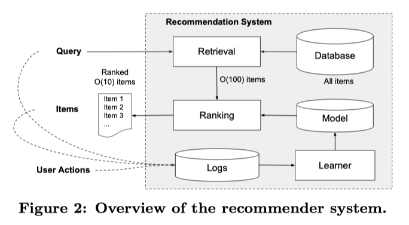
• One challenge in recommender systems, similar to the general search ranking problems, is to achieve both memorization and generalization.– Memorization → Learning the frequent co-occurence of items or features and exploiting the correlation available in the historical data.* Recoms based on memorization are usually more topical and directly relevant to the items on which users have already performed actions.– Generalization → is based on transitivity of correlation and explores new features combinations that have never or rarely occurred in the past.* It tends to improve the diversity of the recommended items.• For massive-scale online recommendation and ranking systems in an industrial setting, generalized linear models such as logistic regression are widely used because they are simple, scalable and interpretable.– Models are often trained on binarized sparse features with one-hot encoding.– Memorization can be achieved through feature interactions (the AND operator) → This explains how the co-occurrence of a feature pair correlates with the target label.– Generalization can be added by using features that are less granular.– Manual feature engineering is often required.– Limitation → One limitation of cross-product transformations is that they do not generalize to query-item feature pairs that have not appeared in the training data.• Embedding models, such as factorization machines or deep neural networks, can generalize to previously unseen query-item feature pairs by learning low-dimensional dense embedding vector for each query and item feature, with less burden of feature engineering.– Challenge → It's difficult to learn effective low-dimensional representations for queries and items when the underlying query-item matrix is sparse and high-rank, such as users with specific preferences or niche items with a narrow appeal.* In such cases, there should be no interactions between most query-item pairs.– But, dense embeddings will lead to nonzero predictions for all query-item pairs and thus can over-generalize and make less relevant recoms.* Linear models with cross-product feature transformations can memorize these “exception rules” with much fewer parameters.• This paper proposes a new method that achieves both memorization and generalization in one model by jointly training a linear model component and a neural network.
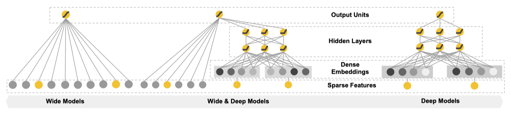
• Wide component → a generalized linear model of this form → y=wTx+ b– One of the most important transformations is the cross-product transformation → 𝜙k(x)=d∏i=1xckii cki∈{0,1}* cki → a boolean variable equal to 1 when the i-th feature is part of the k-th transformation 𝜙k, and 0 otherwise.* • Deep component → a feed-forward neural network.– High-dimensional sparse categorical features first get converted into a low-dimensional dense real-valued embedding vector → dimensionality of embedding vectors are usually in the order of O(10) and O(100).– Embedding vectors are initialized randomly.– The embeddings are passed forward to the next hidden layers. Specifically, each hidden layer performs the following computation → a(l+1)=f(W(l)a(l)+ b(l))* f → activation function (often a ReLU)• Joint Training of Wide & Deep Components → The two components are combined using a weighted sum of their output log odds as the prediction, which is then fed to one common logistic loss function for joint training.– Note → There's a distinction between joint training and ensemble.* Ensemble → individual models are trained separately without knowing each other and their predictions are combined only at the inference time but not at training time.* Joint training → optimizes all parameters simultaneously by taking both the wide and deep part as well as the weights of their sum into account at the training time.· For joint training the wide part only needs to complement the weaknesses of the deep part with a small number of cross-product feature transformations, rather than a full-size wide model.– It uses backpropagation of gradients using mini-batch stochastic optimization.* In the implementation, they used Follow-The-Regularized-Leader (FTRL) algorithm. with L1 regularization as the optimizer for the wide part and AdaGrad for the deep part.* P(Y=1|x)= 𝜎(wTwide[x, 𝜙(x)]+wTdeepa(lf)+b)• – 𝜎 → sigmoid function– 𝜙(x) → cross-product transformations of the original features, x.
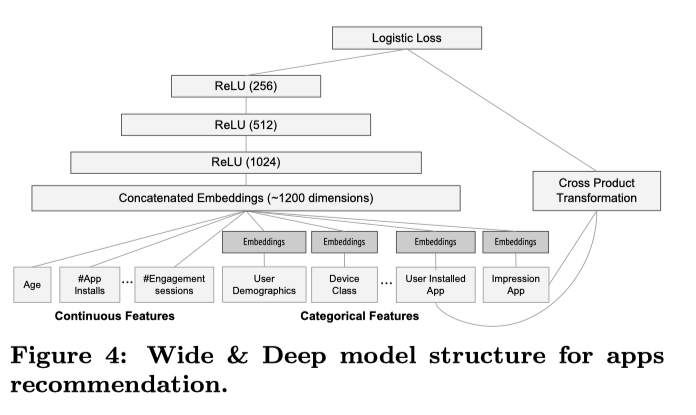
• Implementation → consists of three stages:– Data Generation– Model Training– Model Serving• Data Generation → user and app imression data within a period of time.– Label → app acquisition– Vocabulary → for categorical features → computes an ID space for all string features that occurred more than a minimum number of times.– Continuous variables → normalized to [0,1].• Model Training → see Figure 4 above.– Retraining → warm-start– Before loading the models into the model servers, a dry run of the model is done to make sure that it does not cause problems in serving live traffic. They empirically validate the model quality against the previous model as a sanity check.• Model Serving– Input → a set of app candidates from the app retrieval system and user features.– Output → scores (ranking)– Uses multi-threading in smaller batches.[Back To Top]4.2. YouTube RecSys• Source4.3. Video Recommendation System• A general case for video RecSys like Netflix, YouTube, etc.• The goal of the system is to recommend videos on the user's homepage based on their profile, previous interactions, etc.4.3.1. Requirements• 4.3.2. Frame the Problem as an ML Task4.3.3. Data Preparation4.3.4. Model Development4.3.5. Evaluation4.3.6. Serving[Back To Top]
5. RecSys EmbeddingsSource• Here, we list different methods of generating embeddings for recommender systems.• Neural Collaborative Filtering (NCF)– Input: User-item interaction data (e.g. ratings, clicks)– Computation: Trains a neural network model on the interaction data to learn embeddings for users and items that can predict interactions. Combines matrix factorization and multi-layer perceptron approaches.– Output: Learned user and item embeddings.– Advantages: Captures complex non-linear patterns. Performs well on sparse data.– Limitations: Requires large amounts of training data. Computationally expensive.
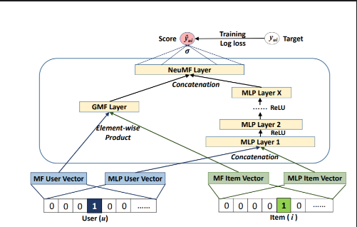
• • Matrix Factorization (MF)– Input: User-item interaction matrix.– Computation: Decomposes the matrix into low-rank user and item embedding matrices using SVD or ALS.– Output: User and item embeddings.– Advantages: Simple and interpretable.– Limitations: Limited capability for sparse and complex data.– • Factorization Machines (FM)– Input: User features, item features, interactions.– Computation: Models feature interactions through factorized interaction matrix. Captures linear and non-linear relationships.– Output: User and item embeddings.– Advantages: Handles sparse and high-dimensional data well. Flexible modeling of feature interactions.– Limitations: Less capable for highly complex data.– • Graph Neural Networks (GNNs)– Input: User-item interaction graph.– Computation: Propagate embeddings on graph using neighbor aggregation, graph convolutions etc.– Output: User and item node embeddings.– Advantages: Captures graph relations and structure.– Limitations: Requires graph data structure. Computationally intensive.– • Factorization Machines vs. Matrix Factorization– Key differences:* Modeling approach: MF directly factorizes interaction matrix. FM models feature interactions.* Handling features: MF doesn’t explicitly model features. FM factorizes feature interactions.* Data representation: MF uses interaction matrix. FM uses feature vectors.* Flexibility: MF has limited modeling capability. FM captures non-linear relationships.* Applications: MF for collaborative filtering. FM for various tasks involving features.* • Representing Demographic Data– Approaches for generating user embeddings from demographics:* One-hot encoding: Simple but causes sparsity.* Embedding layers: Maps attributes to lower dimensions, capturing non-linear relationships.* Pretrained embeddings: Leverage semantic relationships from large corpora.* Autoencoders: Learn compressed representations via neural networks.* Choose based on data characteristics and availability of training data.* • Content-Based Filtering– Represents items via content features like text, attributes, metadata.– Computes user-item similarities using TF-IDF, word embeddings, etc.– Recommends items similar to user profile.• • Comparative Analysis– The choice of embedding technique depends on the characteristics and requirements of the recommender system:– Use NCF or DMF for systems involving complex non-linear relationships and abundant training data.– Prefer MF when interpretability is critical and data is limited.– FM excels for sparse data with rich features.– GNNs are suitable for graph-structured interaction data.
6. Practical Notes6.1. Recommender Systems: Lessons from Building and DeploymentSource• Recsys could be different from industry to industry (e.g., e-commerce, social media) because the business objective is different.• A few considerations when building a recsys:– Dataset creation– Objective-design– Model training– Model evaluation* Offline evaluation* Detecting and mitigating bias– Checklist for checking model correctness– Architecture– Online MLOps– A/B testing6.1.1. Dataset Creation• Let's say we want create a recsys which predicts clicks for an e-commerce like Amazon.– Training a simple CF on all historical interactions data will cost a lot → Will the benefit justify the costs?* To mitigate this issue, we can train the model only on the daily active users → e.g., setting a threshold on activity in the last N days.* If a few users we have not included in training show up, we can fall back to a custom logic, like a content-based or popularity-based retrieval.* Since RecSys models are trained periodically, this subset of users will keep changing.– How much data is enough?* In RecSys, the main idea is to best capture a user’s interest, which changes over time. So it makes more sense to have fresh training data. * In addition, a simple collaborative filtering model cannot capture too much complexity.– Detecting duplicates in your dataset is helpful, like the same video/item posted two times with different Ids.6.1.2. Designing Optimal Objective• When we train a model to predict clicks and use it to serve recommendations, our underlying assumption is that if you click on an item, it is relevant to you. More often than not, it is not completely true. – Let's say you're building a recsys that optimizes for probability of click → results in user spend less time → model recommends clickbait items → clicks are not equivalent to relevance. * To fix this, we can train on watching at least 75% of the video → results in a binary label again → even this has a major problem! → Consider two videos, A and B. A is an entertaining 20 seconds long video, and B is a tutorial video of 60 minutes. To watch 75%, you need to watch 15 seconds of A and 45 seconds of B.– Even a highly accurate model would end up serving a disproportionately large number of shorter duration videos, which is not optimal.* The point is that one signal rarely defines complete relevance.* Each signal has its own bias.* It is a good practice to train multiple models on multiple signals, combine their individual scores (weighted addition, for example), and create the final score.6.1.3. Model Training• In recommendation models, model sizes are much larger than most NLP or CV models. – Recommendation models are memory intensive but compute light → This is a different challenge because now you can’t and don’t need to load the entire embedding table on a GPU/TPU for a batch of data.– We can use frameworks which handle some part of such scaling complexities:* TensorFlow_recommenders* TorchRec * Merlin (by Nvidia)6.1.4. Model Evaluation• Offline Evaluation– In RecSys, we are not interested in objective probabilities. We are more interested in ranking.* It’s the ordering that matters, not the absolute numbers. * Hence, metrics like ROC-AUC, PR-AUC, NDCG, recall@K, and precision@K are better suited. * Recommender systems are notorious for compounding bias towards certain topics, demographics, or popularity.– Popularity Bias* A recommender system trains on logs generated by itself. * If popular content is promoted more by the system, then the incremental logs generated will have more triplets for this popular content. * The next version of the model, trained on these new logs, will see a skewed distribution and will learn that recommending popular items is a safe choice. * This is called popularity bias. – It is advisable to compute metrics on different levels → This helps us understand if the model is performing better for a particular set of users and not performing well for the rest.– Detecting and mitigating bias* How do we measure bias before mitigating it?· One easy way to measure popularity bias is to check how many unique items make 10%, 20%, 50%, .. 100% of recommendations.· In an ideal case, the number of items should increase with % of recommendations. However, for a biased model, the number of items will saturate after a certain % (usually on the lower end) → This is because the model relies on only a certain subset of recommendable items to make predictions.· But this approach does not take the user’s preference into account.For example, if a user U1 interacts with three items A, B, and C; and likes items A and B but not C. Similarly, user U2 interacts with A, B, and C; and likes only A. We know that A is a popular item while B and C are not → For U1, if the model scores higher for A than B, then it may be biased. Because the user response to both of them is positive. Even if the model consistently favours the more popular item, we have a biased model. However, for U2, it makes sense to rank the popular item higher because U2 does not like the other two non-popular items. Although the examples we have used are very simplistic, there are measures like statistical parity that help you measure this.· ·
A (popular)
B (not-popular)
C (not-popular)
U1
1
1
0
U2
1
0
0
· * There are a few simple ways to mitigate bias → one way is to introduce negative sampling.· Consider an e-commerce platform where users interact with a few items out of hundreds shown. · We only know what items the user interacted with (positive examples). · However, we have no idea about what happened to the other items. · To balance this dataset, we introduce negative samples by randomly sampling an item for a user and assigning it a negative label (=0). · The assumption is that a user will not like an item picked randomly. · Since this assumption is most likely true, adding negative samples actually adds missing information to the dataset.6.1.5. Checklist for Testing Model Correctness• Usually, as with any software, we can do that by writing unit tests.– Writing unit test for ML code is uncommon and tricky.– For the CF, the model is essentially a set of user and item embeddings. We can test the model for the following:* Correct scoring → score between 0 and 1.* Correct versioning → since we're re-training the model periodically, we need proper versioning of the embeddings data.* Correct features → Some models, like two-tower models, use features like user activity in the last X hours. One needs to make sure that the feature pipeline that the model consumes does not produce leaky features.* Correct training dataset → no duplicate user-item pairs, labels are correct, train-test split is random, etc.6.1.6. RecSys Architecture• Recommender systems have to pick the best set for a user from a set of millions of items. However, this has to be done within strict latency requirements.– More complex model → more time needed to process one request.– Therefore, RecSys follows a multi-stage architecture → like a funnel → i.e. candidate generator → ranker → heavy ranker.– The idea is to use a simple, lightweight model at the top of this funnel, like a simple collaborative filtering model → should be able to pick a few thousand most relevant items, maybe not with the best ranking → i.e., the relevant items should be present in this set of thousands of items, and it is okay if they are not at the top.– This model optimizes recall and speed. → This model is also called a candidate generator.* Ensure that the embedding dimensions are not too large, even in a simple CF → Using 100s of dimensions might give you a slight increment in the recall but affect your latencies.– Then, these thousands of items are sent to another model called light ranker. As the name suggests, the task of this model is to find the best ranking.* The model is trained for high precision and is more complex than the candidate generator (for example, two-tower models).* It also uses more features based on user activity, item metadata, and more. The outcome of this model is a ranked list top hundreds of items.– Finally, these hundreds of items are sent to heavy ranker.* This ranker has a similar objective to the light ranker, except that it is heavier than the light ranker and uses even more features. * Since it operates on hundreds of items only, the latencies involved with such complex architectures are manageable.
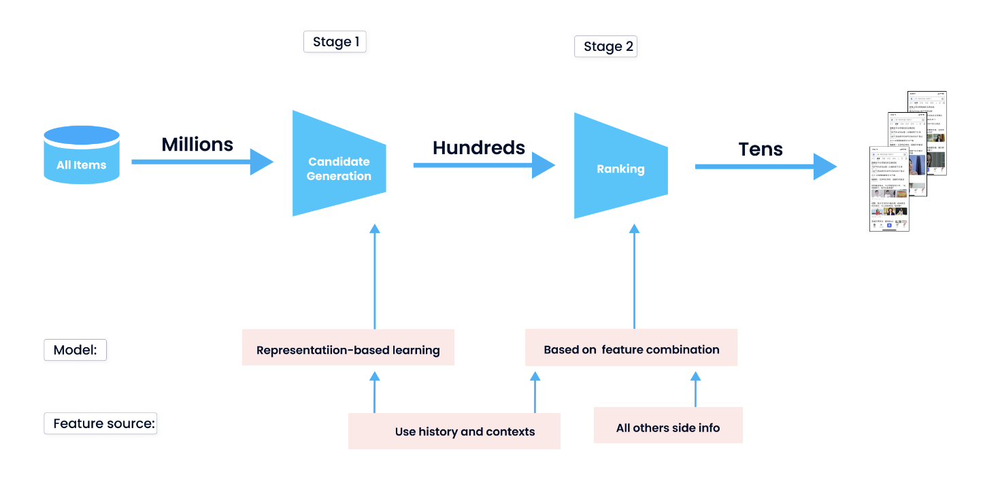
6.1.7. Online MLOps for recommender systems• One good thing about recommendation models vs. a classification or regression model is that we get real-time feedback or “labels”.– Hence, we can set up a comprehensive ML Ops pipeline to closely monitor your model performance. Example of metrics we can monitor are:* Time spent on the platform* Engagement* Clicks* Purchases* User churn– Things like engagement is easy to measure in offline experiments but churn cannot be measured offline.* Usually, we analyze what online metrics that are measurable offline (like time spent, engagement, clicks) have a positive correlation with churn. This reduces the problem of improving a set of predictable metrics in offline experiments.– Besides model quality and performance, we should monitor things like: * Average, 95th percentile, and 99th percentile latencies* CPU* non-200 status code rates * memory usage– Retraining pipelines can also break down because of problems not related to bugs in code, like not enough pods available in your Kubernetes clusters or not enough GPU resources available. * If you are using DAGs on Airflow, it has the option to set up a failure alert on Slack. * Alternatively, tune the number of retries and timeout parameters so that the chances of automatic recovery improve.6.1.8. Recommender Systems: A/B Testing• It is a good practice to roll out the new model to only 98-99% of users and let the rest 1-2% be served by the control model.– This 1-2% of users is called the holdout set. – The idea here is to see if, at some point, the new model starts degrading, is it due to some change that impacts all models, or if something is wrong with this new model alone?– In RecSys, a target model, when served to a small set of users, is still trained on logs majorly generated by the control model. – However, it is possible that when the new model becomes the control, it starts learning from the logs majorly generated by itself and degrades.[Back To Top]6.2. How to Test a Recommender System• Source• Recommender systems fundamentally address the question – What do people want?• Netflix → "The engine filters over 3,000 titles at a time using 1,300 recommendation clusters based on user preferences. It is so accurate that personalised recommendations from the engine drive 80% of Netflix viewer activity."• The point is that if the training objective is not carefully designed, even a near-perfect model will not give good recommendations.– For example, consider the predicted variable as to whether or not a user will watch 95% of the video by video length.* Consider a one-minute video (V1) vs a thirty-minute video (V30). It takes 57 seconds to watch the 95% of V1, and it takes 1710 seconds to watch 95% of V30. V1 could also be a clickbait video, while a user can like V30 and still watch just 1600 seconds of it. So does our definition assure that the positive labels represent user preference?• Most platforms have multiple signals – like, share, download, clicks, etc.– Usually, one is not enough.6.2.1. Offline Evaluation• ROC-AUC– erer• PR-AUC– erer• Ranking metrics– Normalized discounted cumulative gains (NDCG)– Recall@k– Precision@k6.2.2. Addressing the bias• How do you measure bias?• How do you mitigate bias?6.2.3. Online Evaluation• A/B experiments6.2.4. Model Evaluation vs. Testing6.2.5. Behavior Checks for a Recommender System• Measuring embedding update rate• Metrics on different cuts• Variance tests for session-based models6.2.6. Software Checks for a Recommender System• Feature consistency• Leaky features• Updated embeddings[Back To Top]